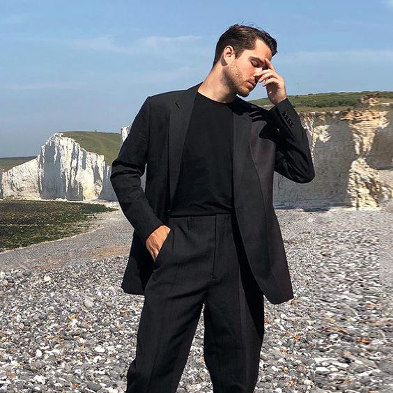
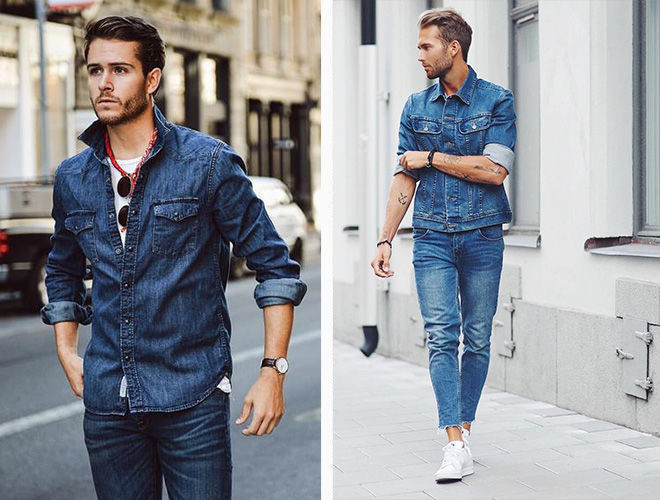
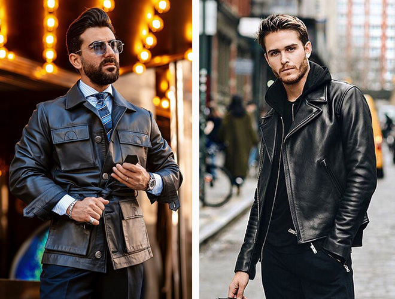
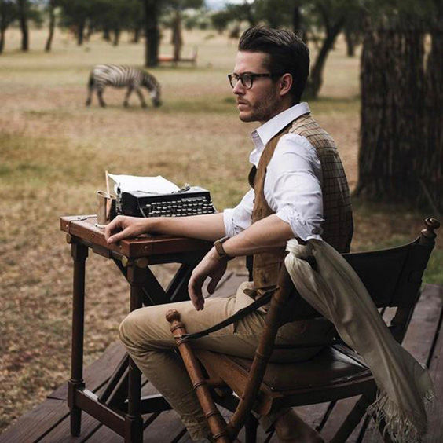
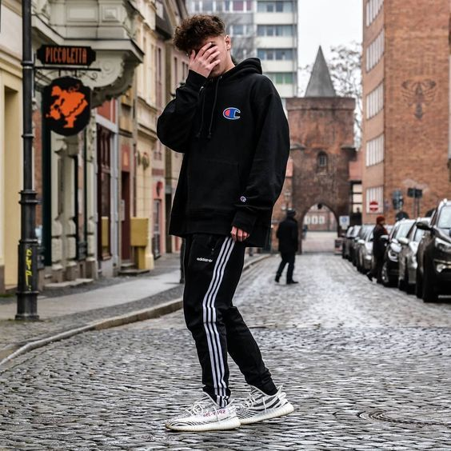
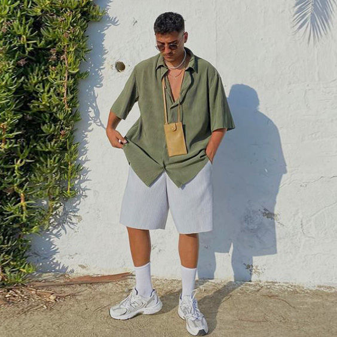
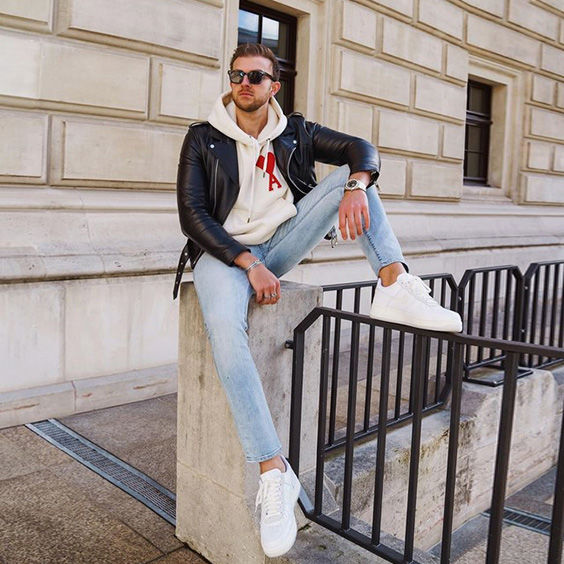
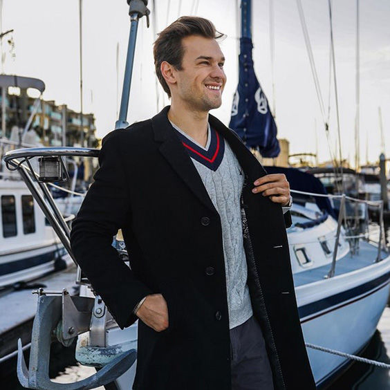
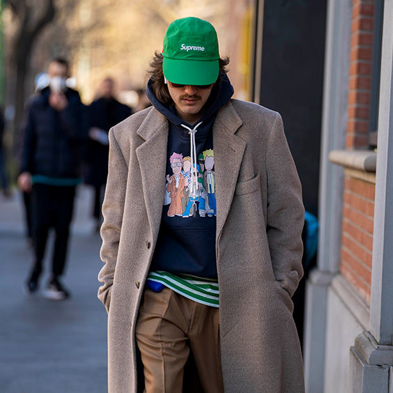

В модных сезонах 2023 года дизайнеры разошлись не на шутку и предложили мужчинам все: начиная от денима и универсального стиля сафари до пижамных шорт и садовых фартуков. Разбираемся, какие тренды можно носить уже сейчас и с чем лучше сочетать самые необычные вещи.
Костюмы

Костюмы всегда были и будут неизменной составляющей мужского гардероба. Среди общих тенденций можно выделить двубортные пиджаки, широкие брюки и яркие расцветки. Также на пике популярности варианты необычных костюмов, например выполненные из трикотажа или кожи. Или костюмы асимметричного кроя, с накладными карманами, ремнями и прочими деталями. В качестве вариантов, уместных для работы и офиса, выбирайте модели в актуальную клетку или полоску.
Джинсовый total look

Мужская мода продолжает отдавать дань нулевым и предлагать деним с ног до головы. Комбинации могут быть самыми различными: стильные шорты и рубашка в тон, свободные брюки и куртка с накладными карманами, джинсы и ретро-бомбер. В общем, на любой вкус и цвет. Сочетать джинсовые тотал луки можно с модными сандалиями, базовыми кедами, лаконичными челси или замшевыми лоферами.
Кожа

Еще один мужской тренд 2023 года, который дизайнеры рекомендуют носить, в том числе и в тотал луках. Костюмы из кожи смотрятся невероятно элегантно, стильно и дорого. Сочетать их можно с базовым трикотажем или интересными футболками (с ярким принтом или глубоким вырезом). Также кожаный комплект можно составить самому. Например, дополнив широкие брюки из кожи курткой-рубашкой или оверсайз бомбером.
Накладные карманы и стиль сафари

Одежда с накладными карманами — маст энд нид грядущего года. Да и в целом стиль сафари прослеживается в коллекциях дизайнеров от мала до велика. Кто-то ударяется в эстетику целиком, дополняя куртки сафари брюками в тон, а также рюкзаками или шляпами с приключенческими мотивами. Другие же миксуют сафари с вещами из других опер: жакетами, кожаными куртками, пальто, джинсами, рубашками и многим другим.
Спортивный стиль

Спортивный стиль в коллекциях 2023 прослеживается даже в мелочах. Например, абсолютным маст хэвом стали капюшоны, которые следует непременно носить на голове. Почти все бренды представили на показах спортивные костюмы с нотками ретро стиля (олимпийки, лампасы, устаревшие ткани). Причем сочетать их следует с предметами классического и делового гардероба, например с остроносыми туфлями.
Ультрамодные шорты

Шорты стали обязательным атрибутом весенне-летнего гардероба. В будущем году в тренде самые разные модели и цвета. Но все же абсолютными фаворитами можно считать варианты с накладными карманами, джорты (широкие джинсовые шорты, длиной ниже колена), пижамные шорты. Да-да, вы не ослышались, теперь их будут носить и в пир, и в мир не только женщины.
Инфантильные мотивы

Вдохновляемся показом Louis Vuitton, вспоминаем детство и добавляем в свои образы вещи с инфантильными мотивами. Это могут быть аппликации, вышивки и нашивки, рисунки, волнистые края и другие атрибуты, присущие детской одежде. Самым модным сочетанием станет микс всего этого с деловым гардеробом и классическими вещами, например жакетами или белыми рубашками. А также комбинация с грубыми текстурами и формами.
Модные вязаные вещи

Без уютного свитера или джемпера невозможно представить осенне-зимний сезон 2023. Помимо базового трикотажа (черный лонгслив обязательно должен быть в гардеробе каждого), в тренде яркие модели плотной вязки. Можете присмотреться к свитерам в технике колорблок, с принтом в виде полоски или клетки. Для лета отличным вариантом станет кружево кроше. Полупрозрачный джемпер светлых оттенков не только будет умопомрачительно смотреться на загорелом теле, но и подарит чувство комфорта даже в
Верхняя одежда оверсайз

Уже начиная с этой осени, выбираем для себя верхнюю одежду оверсайз или с нарочито увеличенной линией плеч. Это могут быть пуховики, бомберы, анораки, изделия из кожи или пальто. Среди последних особенно выделяют модели на запах (максимально расслабленные варианты из мягких тканей, без пуговиц) и варианты классического кроя с объемными плечами. Их можно носить и с модной джинсой, и с классическими брюками — выглядит «вау»!